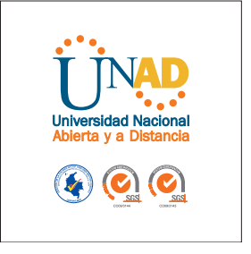

|
Objetivos:
desarrolla sitios web en formato HTML5 y CSS3, para ser visualizados en diferentes navegadores teniendo en cuenta su funcionabilidad y usabilidad, por medio del uso de diferentes editores de código
Tematicas: Introducción a HTML5, Estructura básica de HTML5, Aplicación de elementos de HTML5 a un proyecto de diseño Web, Introducción a CSS3, Estructura básica de CSS3, Aplicación de elementos de CSS3 a un proyecto de diseño Web. |
 |